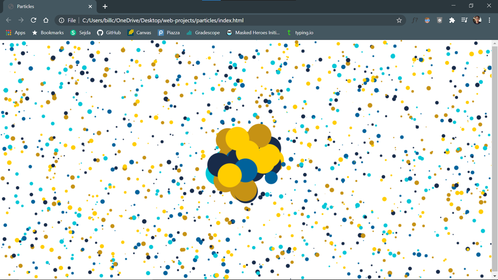

Day 1
5 April 2021
Overview of today:- Realized it's Monday
- Drank milk for breakfast
- Attended/watched classes and discussions
- Ate an okay lunch
- Attended/watched more classes and discussions
- Ate a good dinner
- Worked on homework
- Worked on individual project
Today was another day in quarantine. Felt like most other days since last Spring Quarter when I first returned home because of COVID-19. Beginning of Week 2. Good thing is that I'm excited for my classes this quarter. Lots of interesting things to learn. Worked on organizing schedule using Google Calendar. Thinking ahead to summer. Will I be able to get an internship? Frustrated with how some internships require experience. I'm here to gain experience!
Here's a screenshot of something I've been working on (it doesn't look as cool static).

- Homework
- Project
- Club
Reflection
Yes.Day 2
6 April 2021
Overview of today:- See above, not much was different
- Highlight: CSE 110
Still quarantine? Yeah, I know, it's been a year. Here's a haiku about the experience:
Trapped within these walls,
Without an escape in sight,
What else will soon come?
Nevertheless, I've been trying to make my time staying at home worthwhile. I should be getting to used to it by now. Really miss in-person... everything. Want to go back to UCSD ASAP. Again, trying to make the most of each day. Think of what other humans have gone through in the past? Philosophy is useful and fun. Ideas are one of the best things about life (maybe that's a bit much, but then again, not really). Taking my final PHIL course this quarter. Going to miss them. Got a dose of software engineering from Professor Powell, makes me excited for what's to come.
Here's an excerpt of the lecture.
- Homework
- Project
- Club
Reflection
Yes.Day 3
7 April 2021
Overview of today:- Mainly the same again, however there were several new events
- Attended Tau Beta Pi event, almost to initiation!
- Met with Professor Bucur and group for TRELS project
- Started on Lab Week 2
Started the day with PHILosophy. Went to first discussion session of the quarter for PHIL 28. Somewhat disappointed in lack of enthusiasm and participation. To be expected though. Took first math quiz of the quarter. Missed a point because of a silly mistake, gets me every time. Had my resume critiqued by TBP officers, always glad to have feedback from others. Had a meeting with Professor Bucur and group for TRELS project. Project is coming along fine, really fun to be able to learn and apply software engineering (albeit very simply). It definitely isn't bad at all.
- Homework
- Project
- Club
Reflection
Yes.That is all. To end, please take a moment to listen to these relaxing, majestic sounds.